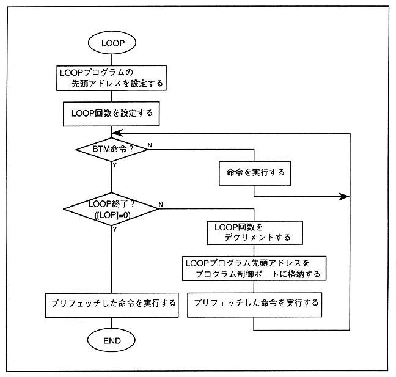

A program between the address specified in the top address register ([TOP]) and the DSP BTM instruction (refer to Section 4.5 “Instruction”, LOOP BOTTOM instruction) is specified in the loop counter ([LOP]) It will be executed repeatedly. Therefore, in order to realize this processing, set the values in the top address register and loop counter in advance and then execute them. The value can be set by the DSP Load immediate command (refer to Section 4.5 “Command”, Load immediate command). Figure 4.3 shows the execution flow of the LOOP program.
Figure 4.3 LOOP program execution
